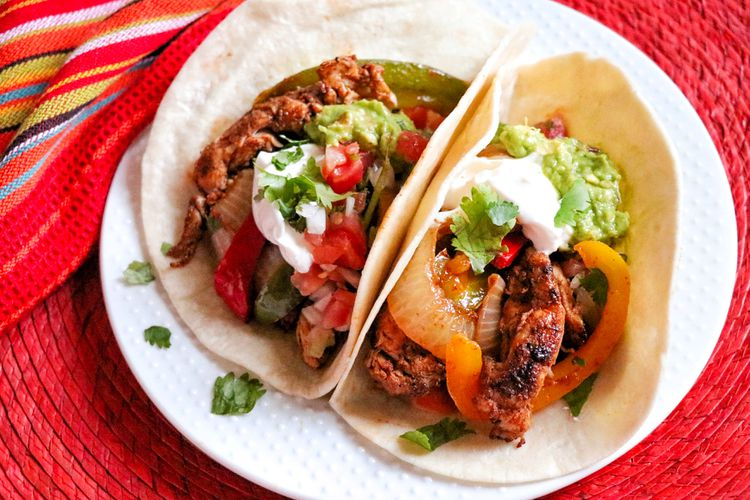

Home
Chicken Fajitas

Description
This has quickly become one of my personal favorite recipes of all time! The chicken alone is delectable but when paired with the sautéed veggies it adds a whole new level of flavor. If you´re open minded then I recommend eating it with a squeeze of lime for added tang.
Ingredients
- 1 tablespoon chili powder
- 1 teaspoon ground cumin
- 1 teaspoon ground paprika
- 1 teaspoon salt
- 1 teaspoon ground black pepper
- 1/4 teaspoon cayenne pepper
- 1/4 teaspoon garlic powder
- 1 1/2 pounds skinless, boneless chicken breast, cut into cubes
- 4 tablespoons olive oil, or more as needed
- 2 bell peppers, sliced
- 1 onion, thinly sliced
- 8 (6 inch) flour tortillas
- Optional: 1 lime, cut into wedges
Steps
- Whisk chili powder, cumin, paprika, salt, pepper, cayenne pepper, and garlic powder for fajita seasoning together in a small bowl.
- Trim chicken of any excess fat and place in a large, lidded bowl. Add 2 tablespoons olive oil and sprinkle with about 3/4 of the fajita seasoning. Toss, adding more oil if necessary, until coated. Place the lid on the bowl and shake until chicken is thoroughly coated. Marinate in the refrigerator, shaking every couple of hours, for 1 to 2 hours.
- Remove the marinating bowl from the refrigerator and let sit on the counter until chicken is room temperature, about 1 hour.
- Preheat stove top at medium heat and lightly oil the skillet then add chicken and cook until nicely colored, stirring often so it cooks evenly.
- When chicken is done cooking set it to the side in a bowl and add peppers and onion to that same skillet with a bit more oil. Stir in remaining fajita seasoning and cook, stirring occasionally, until vegetables are soft, 8 to 10 minutes.
- When vegetables are done cooking set them aside in a bowl as well then place the tortillas in that same skillet to warm so it soaks up all the flavors from the chicken and vegetables.
- To assemble fajitas, fill warmed tortillas with chicken, peppers, and onions.(Optional: add a squeeze of lime).